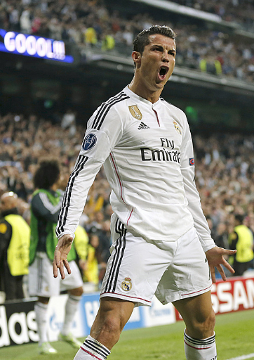
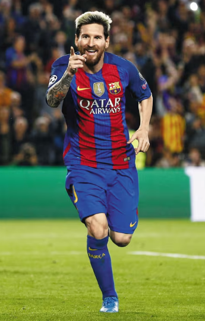

디지털 기술을 활용하면서도 환자의 마음을 이해하고,
따뜻한 소통으로 신뢰받는 간호사를 꿈꿉니다.
안녕하세요. 단국대학교 간호학과 2학년에 재학 중인 반세훈입니다.
저는 사람들과 소통하는 것을 좋아하고, 서로 협력하며 함께 성장하는 과정에서
큰 즐거움을 느낍니다. 평소 탁구와 축구를 즐기며 음악 감상, 여행, 운동을 통해
새로운 경험과 활력을 얻고 있습니다.
저의 강점은 책임감, 공감 능력, 협업 능력입니다.
맡은 일에 책임감을 가지고 임하며, 다른 사람의 입장에서 생각하고
원활하게 소통하려 노력합니다.
집중력과 순발력을 기르고, 끊임없이 실력을 발전시키는 과정에서 즐거움을 느낍니다.
축구를 즐기며 선수들의 플레이와 팀워크를 보는 것을 좋아합니다. 특히 호날두와 메시를 가장 좋아합니다.
음악을 들으며 여유를 즐기고, 새로운 장소와 문화를 경험하며 시야를 넓히는 것을 좋아합니다.
축구를 좋아하는 이유 중 하나는 선수마다 다른 스타일과 매력을 느낄 수 있기 때문입니다. 그중에서도 크리스티아누 호날두와 리오넬 메시를 가장 좋아합니다.

끊임없는 노력과 자기관리, 그리고 포기하지 않는 열정이 인상적인 선수입니다. 목표를 향해 끊임없이 도전하는 모습에서 많은 영감을 받습니다.

뛰어난 창의성과 섬세한 플레이, 경기의 흐름을 바꾸는 능력이 매력적인 선수입니다. 자신만의 스타일로 축구를 즐기는 모습이 인상적입니다.
"Two legends, two different styles, one love for football."
축구를 향한 하나의 열정맡은 역할을 끝까지 수행하고 신뢰를 쌓기 위해 노력합니다.
상대방의 감정과 입장을 이해하고 진심으로 소통하려 합니다.
서로의 의견을 존중하며 공동의 목표를 위해 함께 노력합니다.
빠르게 발전하는 디지털 기술을 간호에 적극적으로 활용하여 더 정확하고 효율적인 간호를 제공하고 싶습니다. 하지만 기술만큼 중요한 것은 환자의 마음을 이해하는 것이라고 생각합니다. 전문성과 따뜻한 공감 능력을 함께 갖추어 환자에게 신뢰와 안정을 주는 간호사로 성장하겠습니다.